Thomas Napier
PhD Candidate and Graduate Researcher
Discipline of Information Technology
College of Science and Engineering
James Cook University
Australia
Short Bio
I am a PhD Candidate, Sessional Lecturer and Graduate Research Worker at the Discipline of Information Technology, College of Science and Engineering, James Cook University (JCU). I graduated with a Bachelor of Information Technology with Distinction (GPA 6.78/7.00) in 2020 and with First-Class Honours (1A) in 2021, earning the University Medal under the supervision of Prof. Ickjai Lee.
Currently, I am in the final year of my PhD (completion in 2025) at JCU, focusing on machine learning techniques for species classification in natural soundscapes. I am supervised by an interdisciplinary advisor panel including Prof. Ickjai Lee, Dr. Euijoon Ahn (Information Technology) and Distinguished Prof. Lin Schwarzkopf, and Dr. Slade Allen-Ankins (Ecology and Zoology).
I have also collaborated on several multidisciplinary, industry-based projects, including designing machine learning models for marine biology with the Australian Abalone Growers Association, developing advanced tourism analytics with ResPax, and improving insurance claims processing workflows with HelloClaims. These projects involved applying deep learning, data mining, and augmented reality solutions to address real-world challenges.
Research Interests
Keywords: Ecoacoustics, bioacoustics, unsupervised clustering, machine learning, sound event detection, dimensionality reduction, data visualization, AR and AI in education, environmental monitoring, software development, generative AI, human-computer interaction.
My research focuses on developing machine learning techniques and software tools for ecoacoustics analysis, specialising in feature extraction, unsupervised clustering, and scalable annotation workflows. I also explore AR and AI technologies in education, including tools for teaching IT concepts and using generative AI for assessment. My work emphasises user-friendly, scalable solutions that support biodiversity monitoring, conservation, and educational innovation.
Education

James Cook University
Doctor of Philosophy (PhD), Information Technology
Feb 2022 - Aug 2025
Research Area: Species Classification using Deep Learning-Based Signal Processing Techniques in Natural Soundscapes
James Cook University
Bachelor of Information Technology (Honours)
2020 - 2021
Grade: First Class (1A), 7.00 GPA, University Medal
Research Area: Using Mobile-Based Augmented Reality and Object Detection for Real-Time Abalone Growth Monitoring
View Dissertation
James Cook University
Bachelor of Information Technology
2017 - 2020
Grade: 6.78/7.00 GPA, Graduated With Distinction
Minoring in Human-Computer Interactions and Games Design
Awards
HDR CSE Incentive Award
Issued by James Cook University · Oct 2024
Awarded to higher degree by research candidates for achieving excellent performance that correlates with increasing on-time completion based on evidence of accepted publications and external grants.
View CertificateCSE Competitive Research Training Grant 2023
Issued by James Cook University · Apr 2023
Awarded a highly competitive research training grant (out of 70 total applications).
Bev Frangos Graduate Instructor Prize
Issued by James Cook University · Mar 2023
Awarded to the student enrolled in a masters or PhD program in Electrical and Electronic Engineering, Electronic Systems and Internet of Things Engineering, or Information Technology who has made an outstanding contribution to teaching.
View AwardResearch Training Program Scholarship
Issued by James Cook University · Jan 2022
Awarded a highly competitive scholarship from JCU based on academic merit.
University Medal
Issued by James Cook University · Sep 2021
For outstanding academic achievement in a combination of coursework studies and research undertaken at undergraduate level. Specifically, completion of an Honours research component, achievement of a Grade Point Average (GPA) greater than 6.50 for undergraduate subjects, achievement of a first class level A Honours rank, endorsed as eligible to receive the University medal by the relevant JCU College Dean, and of good character and a meritorious recipient for the medal.
View Award Photo PhotoLetter of Commendation
Issued by James Cook University · May 2018
Awarded for achieving a GPA of 6.00 or higher for first-year IT subjects.
News
- January, 2025: I was appointed as the subject coordinator for CP2414: Network Security and CP2501: Cloud Computing.
- January, 2025: Our paper, 'LEAVES: An open-source web-based tool for the scalable annotation and visualisation of large-scale ecoacoustic datasets using cluster analysis', was accepted by Ecological Informatics (IF=6.0)
- December, 2024: Contracted to lecture the JCU subjects CP1402: Internet Fundamentals and CP2414: Network Security in TR1, 2025.
- December, 2024: The subject, CP2501/CP3511: Cloud Computing, which I lectured, recieved 84% overall satisfaction from internal JCU student feedback.
- December, 2024: The teaching and research grant project I collaborated on, CodeCraft: Augmented Learning for IT Students ($10,000), successfully passed student testing (26 participants) and evaluation, receiving >80% excellent overall ratings in terms of usefulness.
Experience & Skills
Key Skills
Programming Languages & Frameworks
- Proficient in: Python, JavaScript, C#, CSS3, HTML5, TensorFlow, PyTorch, Django, Flask, Unity, GitLab, LaTeX
- Familiar with: Java, Express.js, Linux, R, Jupyter Notebook, Ubuntu, Apple ARKit, AWS, Docker
- Currently Learning: Electron, TypeScript
Tools & Development Environments
- GitHub, Android Studio, PyCharm, Visual Studio Code, Sublime Text, Ubuntu
- REST APIs, Docker, PostgreSQL, librosa
Machine Learning & Data Science
- Deep Learning: TensorFlow, PyTorch
- Data Mining & Clustering: HDBSCAN, DBSCAN, UMAP
- Object Detection, Augmented Reality (AR), librosa
- Data Analysis, Visualization, Dimensionality Reduction
Professional Skills
- Leadership & Mentorship
- Agile Development, Scrum Methodologies
- Interpersonal Communication, Customer Service
- Collaborative & Creative Problem-Solving
- Technical Support & Troubleshooting
Teaching & Academic Skills
- University-level Teaching (IT Courses)
- Curriculum Design (e.g., Data Mining, Cloud Computing)
- Assessment Development & Evaluation
- Student Mentorship & Support
Other Technical Skills
- Mobile Application Development
- Motion Graphics, Game Design
- Network Security & Troubleshooting
- Search Engine Optimization (SEO)
Programming Languages & Frameworks
- Proficient in: Python, JavaScript, C#, CSS3, HTML5, TensorFlow, PyTorch, Django, Flask, Unity, GitLab, LaTeX
- Familiar with: Java, Express.js, Linux, R, Jupyter Notebook, Ubuntu, Apple ARKit, AWS, Docker
- Currently Learning: Electron, TypeScript
Tools & Development Environments
- GitHub, Android Studio, PyCharm, Visual Studio Code, Sublime Text, Ubuntu
- REST APIs, Docker, PostgreSQL, librosa
Machine Learning & Data Science
- Deep Learning: TensorFlow, PyTorch
- Data Mining & Clustering: HDBSCAN, DBSCAN, UMAP
- Object Detection, Augmented Reality (AR), librosa
- Data Analysis, Visualization, Dimensionality Reduction
Professional Skills
- Leadership & Mentorship
- Agile Development, Scrum Methodologies
- Interpersonal Communication, Customer Service
- Collaborative & Creative Problem-Solving
- Technical Support & Troubleshooting
Teaching & Academic Skills
- University-level Teaching (IT Courses)
- Curriculum Design (e.g., Data Mining, Cloud Computing)
- Assessment Development & Evaluation
- Student Mentorship & Support
Other Technical Skills
- Mobile Application Development
- Motion Graphics, Game Design
- Network Security & Troubleshooting
- Search Engine Optimization (SEO)
Publications
2025
2024
2023
2022
Projects
LEAVES: Large-scale Ecoacoustics Annotation and Visualization with Efficient Segmentation
LEAVES is a Python Dash-based open-source tool designed for large-scale ecoacoustics annotation and visualization.
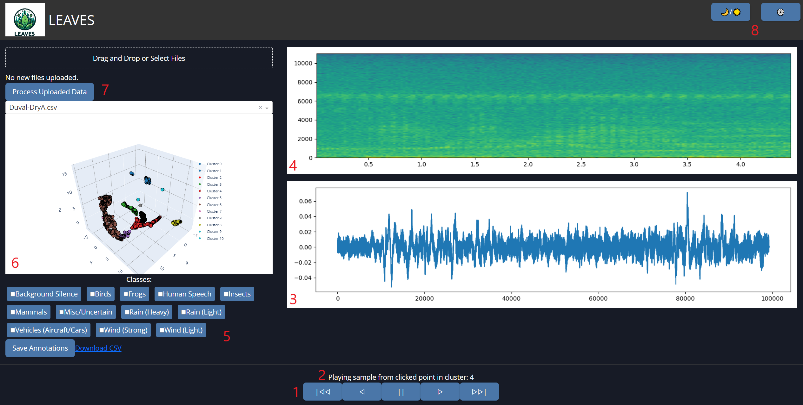 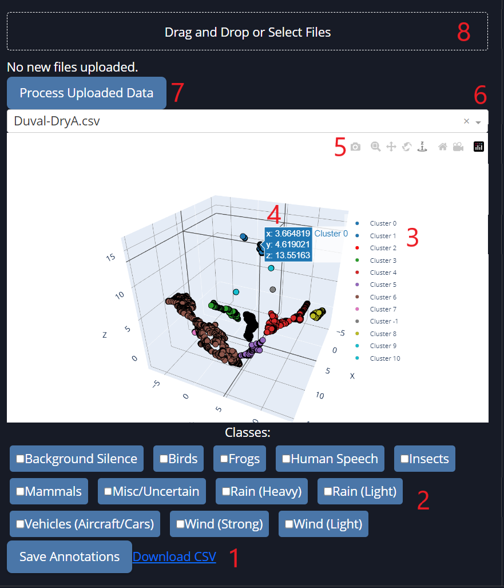 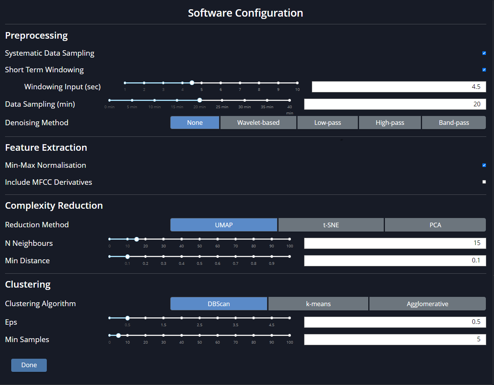{kind=link}
{kind=link}
{kind=link}
CodeCraft: AR-based Database Normalization Tool
CodeCraft is an augmented reality educational tool combining AR and AI to teach database normalization effectively.
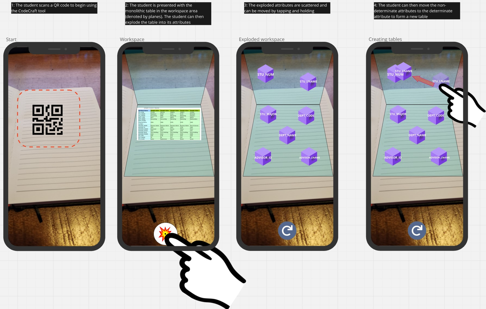 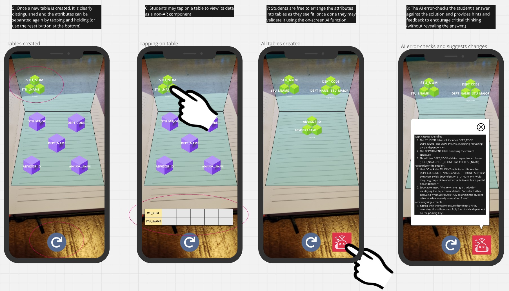{kind=link}
{kind=link}
Real-time Abalone Monitoring with AR
Developed a mobile tool combining AR and object detection to automate measurement and counting of Abalone in aquaculture.
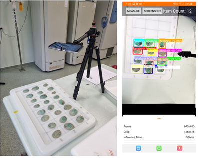 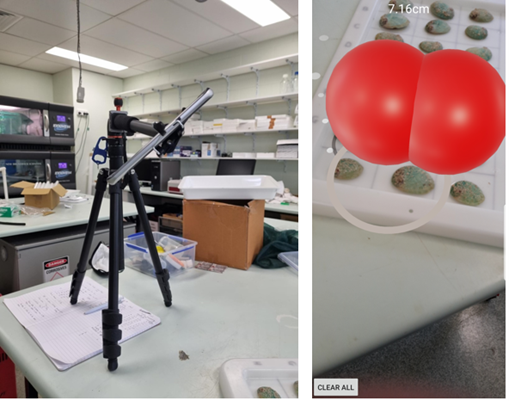 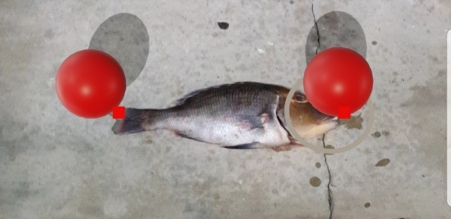{kind=link}
{kind=link}
{kind=link}
Pirapelago: A Unity-based 2D Pirate-Themed Rogue-like Game
Pirapelago is a pirate-themed rogue-like bullet hell developed by a small team for a university project. Experience multiple enemy types, ship upgrades, and scaling difficulty as you fight your way across the archipelago.
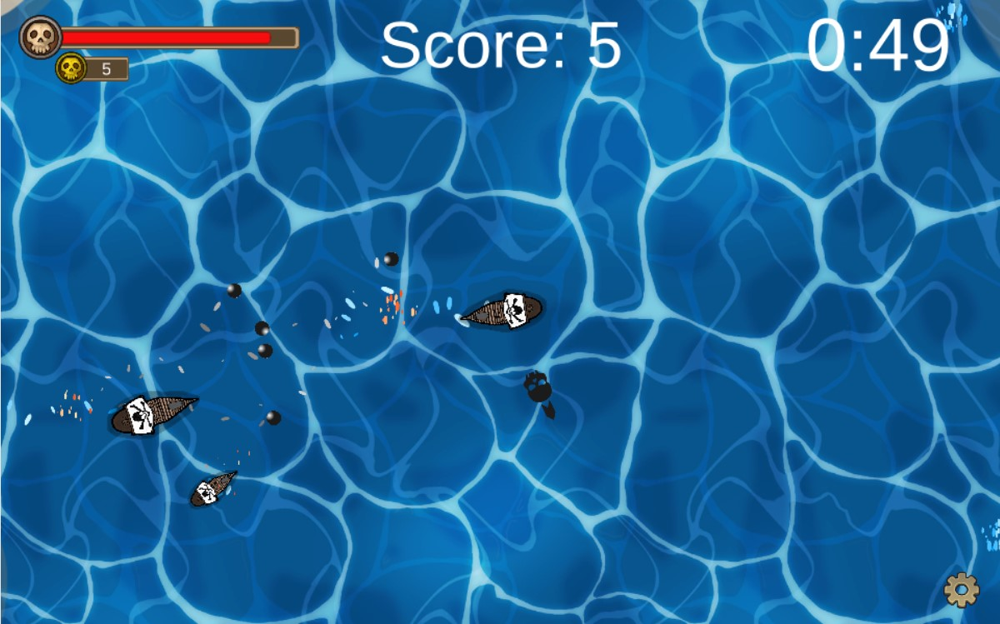 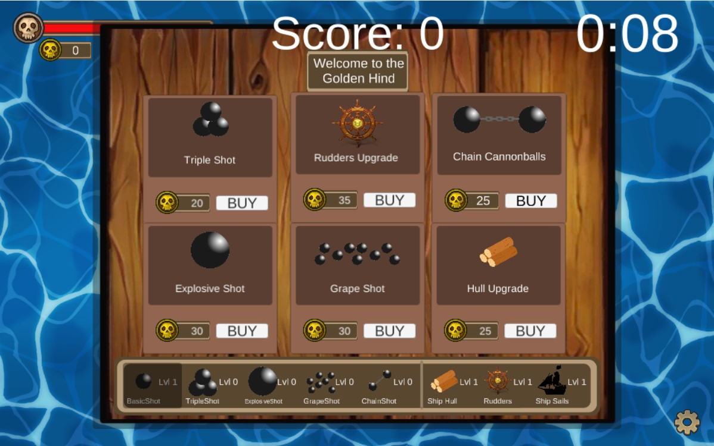 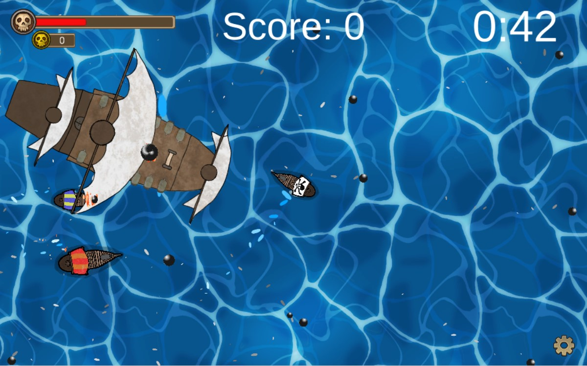{kind=link}
{kind=link}
{kind=link}
TrueLogic: An interactive Mobile-Based Problem-Solving Education Game
TrueLogic is a simple timed quiz-style Android app aimed at early highschool kids to help improve thier problem-solving and lateral thinking skills. It includes accelerometer gesture control, basic social network integration with Twitter4J API and high score recordkeeping with SQLite.
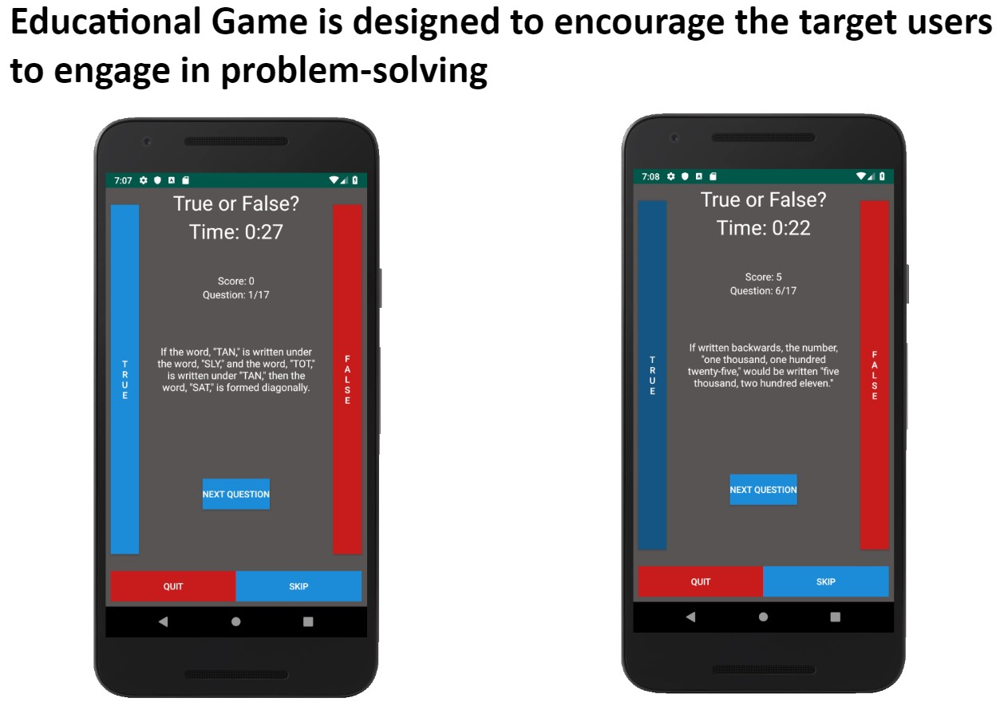 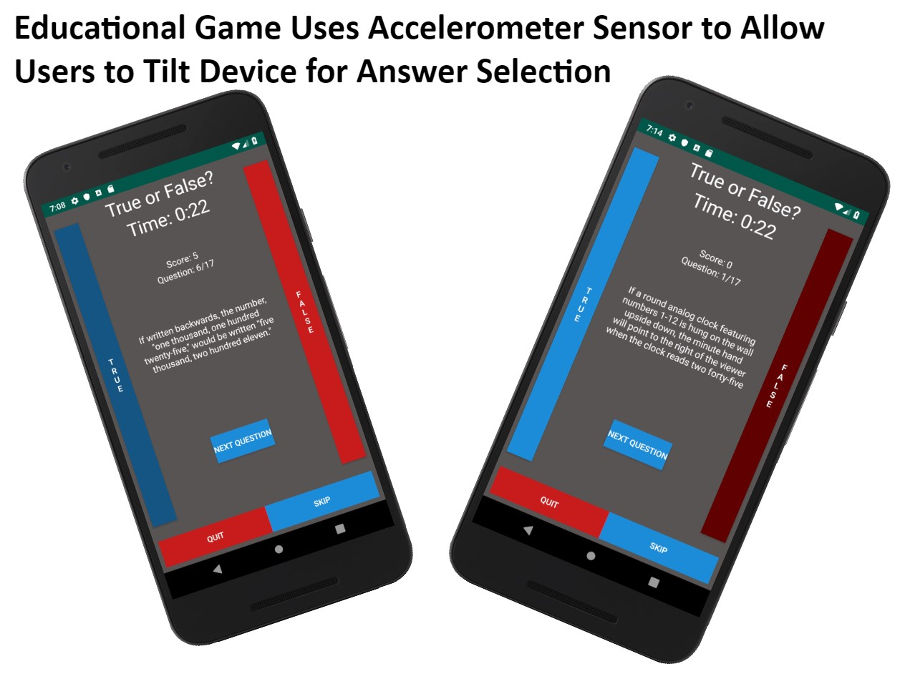{kind=link}
{kind=link}
{kind=link}
{kind=link}
{kind=link}
Cool Links
Tools (AI, and others)
-
Elicit
Elicit uses language models to extract data from and summarize research papers.
-
Obsidian
Obsidian is the private and flexible writing app that adapts to the way you think.
-
Quillbot
QuillBot helps to rewrite and paraphrase text using AI.
Research/Academic
-
Vertebrate Ecology Lab
Research lab I am involved with focusing on the intersection of ecology, evolution and behavioural ecology of vertebrates.
-
AI Conference Deadlines
Countdowns to top CV/NLP/ML/Robotics/AI conference deadlines.
-
CORE Rankings Portal
For viewing conference rankings.
-
Scimago Journal & Country Rank
For viewing journal rankings.
Other
-
12ft Ladder
Remove popups, banners, ads and paywalls from any website.
-
DrawIO
draw.io is free online diagram software for making flowcharts, process diagrams, org charts, UML, ER and network diagrams.
God (Psalm 34:4-5, 8)
-
BibleGateway
For God so loved the world that he gave his one and only Son, that whoever believes in him shall not perish but have eternal life. For God did not send his Son into the world to condemn the world, but to save the world through him - John 3:16-17
-
BibleRef
Online Bible commentary.